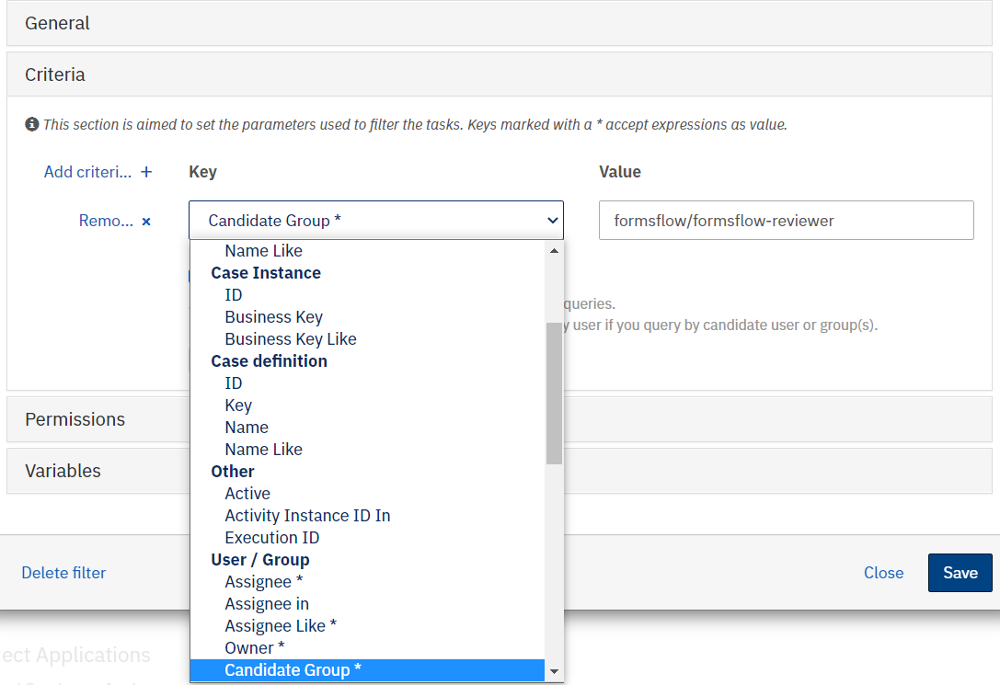
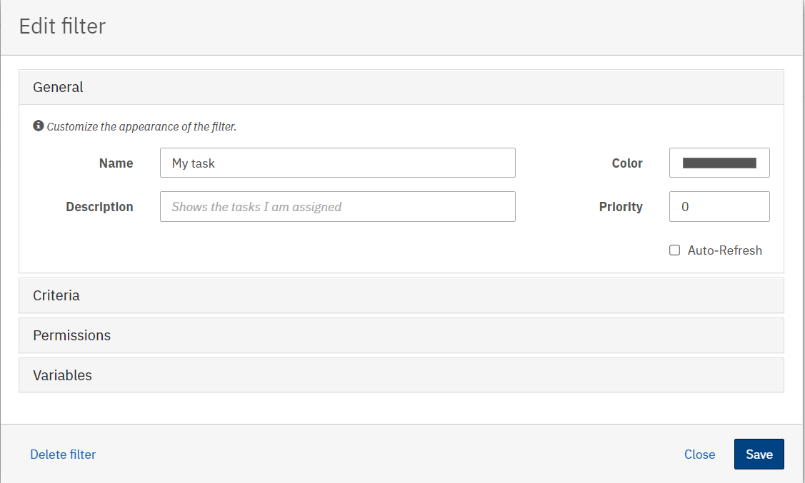
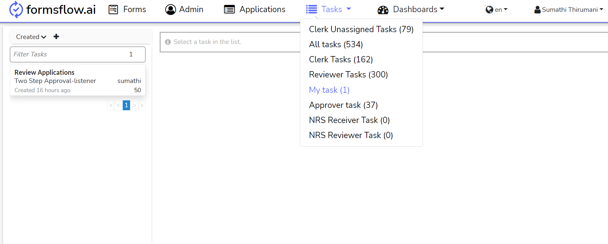
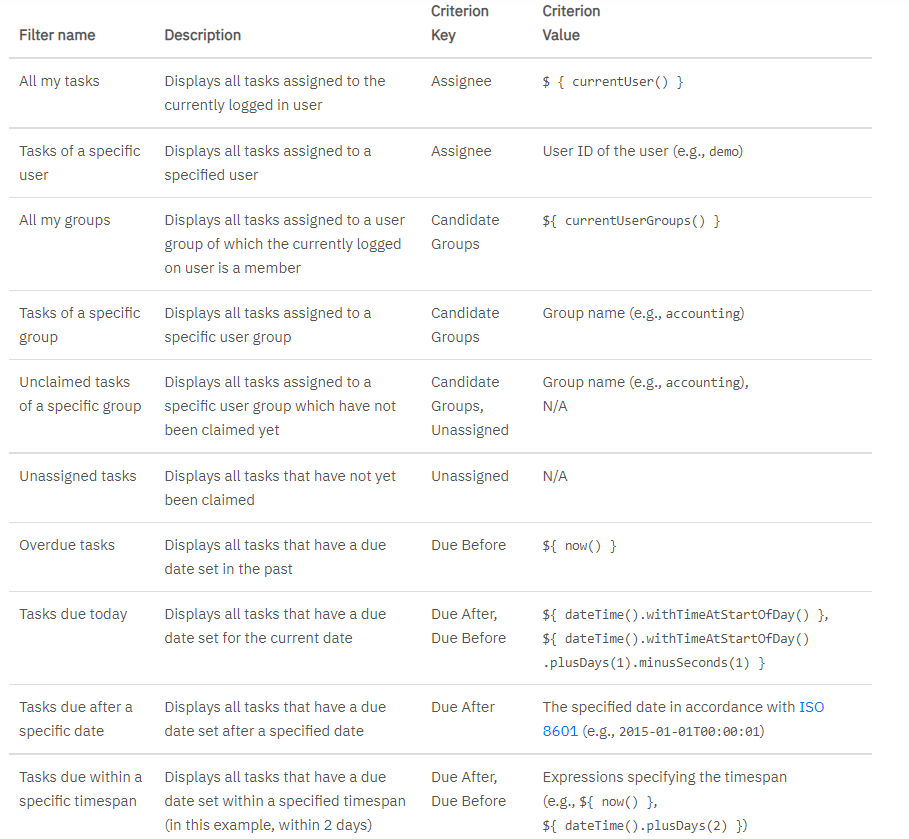

<article class="docs-article">
    <section class="docs-section" id="filters">
        <div>
            <h1>Camunda Filters</h1>
            <hr><br><br>
            </img><br>
            <p>In Tasklist, you can create and select filters. You can use these filters to create lists
                of tasks, sorted by specified criteria. To create a filter, select Create a Filter. You
                will then see a screen as depicted in the above image. You have several options to
                configure your filter:</p>
            <ul>
                <li><strong>General</strong> - Specify the name and description of the filter as well as
                    assigning a color. Assign a priority to determine the order in which the filters are
                    displayed on the dashboard.
                    You can choose to have the filter automatically refresh the filter results by
                    selecting the checkbox Auto-Refresh.The default refresh interval is 10 seconds.</li>
                <li>
                    <strong> Permissions</strong> - Specify which users or groups can see the filter.
                    You can set the filter as globally accessible by selecting the checkbox Accessible
                    by all users. A permission that is set here is equivalent to a READ permission which
                    can also be set in Camunda Admin. In case you want to assign other permissions, you
                    can do so in the Authorizations tab in Camunda Admin.
                </li>
                <li>
                    <strong>Criteria</strong> - Specify which tasks will be displayed when selecting the
                    filter. A key and a value must be inserted.
                </li><br>
                </img><br>

                <div class="callout-block callout-block-info">
                    <div class="content">
                        <span class="callout-icon-holder me-1"></span>

                        <i class="fa fa-bullhorn"></i>

                        <strong>NOTE :</strong>
                        Keys marked with a * accept expressions as value.
                    </div>

                </div>
                <li>
                    <strong>Variables</strong> - Specify which variables are displayed in the filter
                    results section of the dashboard. Setting variables here has no influence on which
                    tasks are displayed. To set the variables, you need to insert a Name, which is the
                    coded name of the variable, and a Label, which defines what the variable will be
                    named in the filter results.
                </li>
            </ul>
            <h2>Common Filters</h2>
            <ol>
                <li>
                    <strong>My task</strong> filter
                </li>
                This filter will display tasks claimed by logged in user.
                <br><br>
                </img><br><br><br>

                </img><br><br><br>
                </img><br><br><br>
                <li>
                    <strong>All tasks </strong>filter
                </li>
                This filter will display all task of the user logged in.
                <br><br>
                </img><br><br><br>
                </img><br><br><br>
                In the table below we list some of the more common and useful filters that you can
                create in Tasklist and how to set them up.
                <br></img><br><br>
            </ol>
</div>
</section>
</article>